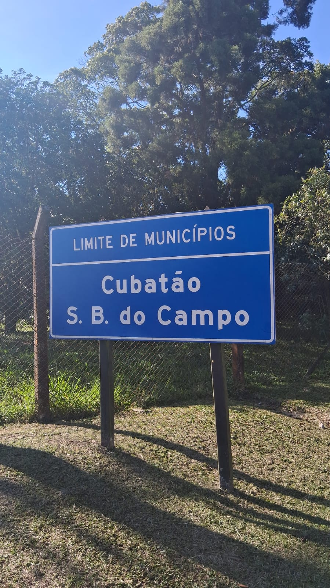

Aula 5: As Fronteiras Geográficas
Delimitação, Controle e Interação no Espaço Global

Em Geografia, as fronteiras são muito mais do que simples linhas em um mapa. Elas representam os limites que separam um território de outro, mas também são zonas dinâmicas de contato, interação e, por vezes, de conflito. As fronteiras são construções sociais e políticas que refletem relações de poder, identidade e controle sobre o espaço.
Funções das Fronteiras
As fronteiras desempenham múltiplas funções essenciais na organização do espaço geográfico e nas relações internacionais:- Delimitação e Soberania: A função primária é estabelecer os limites da jurisdição de um Estado, definindo onde seu poder e leis se aplicam. Isso garante a soberania sobre o território.
- Controle de Fluxos: Servem para controlar o movimento de pessoas (imigração/emigração), mercadorias (comércio), capitais, ideias e informações. Podem ser mais permeáveis ou restritivas, dependendo das políticas dos Estados.
- Defesa e Segurança: Atuam como linhas de defesa militar e estratégica, sendo pontos cruciais para a segurança nacional.
- Regulação Econômica: Permitem a aplicação de tarifas aduaneiras e políticas comerciais específicas, influenciando o fluxo de bens e serviços.
- Símbolo de Identidade: Para as populações, as fronteiras podem ser um símbolo forte de identidade nacional e pertencimento, reforçando a distinção entre "nós" e "eles".
Tipos de Fronteiras
As fronteiras podem ser classificadas de diversas maneiras, considerando sua natureza e origem:Fronteiras Naturais (ou Físicas)
São aquelas que utilizam elementos geográficos naturais como referência para sua demarcação.- Exemplos: Rios (como o Rio Grande entre EUA e México), cadeias de montanhas (como os Andes entre Chile e Argentina), desertos, lagos ou mares.
- Vantagens/Desvantagens: Podem ser mais fáceis de identificar, mas nem sempre são precisas ou impenetráveis (rios mudam de curso, montanhas têm passagens).
Fronteiras Artificiais (ou Geométricas/Convencionais)
São traçadas por acordos políticos, tratados ou divisões históricas, muitas vezes sem levar em conta acidentes geográficos.- Exemplos: Linhas retas (comuns em países africanos ou no deserto do Saara, resultantes de divisões coloniais), paralelos e meridianos (ex: o paralelo 49 entre EUA e Canadá).
- Vantagens/Desvantagens: Mais precisas e fáceis de demarcar no mapa, mas podem dividir comunidades, culturas ou ecossistemas, gerando tensões.
Fronteiras e Conflitos
Historicamente, as fronteiras têm sido palco de inúmeros conflitos. Disputas territoriais podem surgir de:- Recursos Naturais: Disputa por jazidas de petróleo, gás, água ou minerais que se estendem por áreas de fronteira.
- Questões Étnicas e Culturais: Minorias que se sentem divididas por fronteiras artificiais ou que buscam autonomia/separação.
- Interesses Estratégicos: Controle de rotas comerciais, acessos marítimos ou posições militares vantajosas.
- Heranças Coloniais: Muitas fronteiras na África e Ásia foram traçadas por potências coloniais, desconsiderando as realidades locais e semeando futuros conflitos.